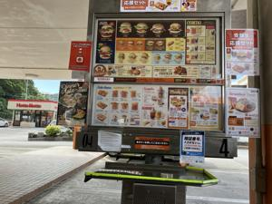
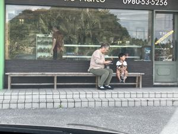
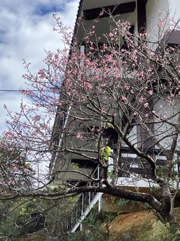
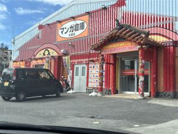

うるがいの話 ある日
最新: グソーの正月（１６日）【うるがいの話 ある日】とは 一日だけのプログです
『うるがいの話』の最新一日だけのプログで、通信料が少なく経済的だ。カニの画像をクリックすると全ての日付が載る『うるがいの話』サイトを表示します
|
|
【うるがいの話】 うるがい(ｳﾙｶﾞｲ urugai)とは、『もずくがに』の名前でとても大きくなります。 |
|---|---|
|
|
【カミマヤーの話】 猫のことを方言でマヤーといいます。カミマヤー（kamimayaa）とは、神の猫のことです。 |
|
【たながぁの音楽】 たながぁ（ﾀﾅｶﾞｰ tanagaa）とは手長えびのことで、何種類かあり大きいのは車 エビぐらいになります。 |

|
【ぶながぁの話】 ぶながぁ(ﾌﾞﾅｶﾞｰ bunagaa)とは、赤い髪の毛、赤い身体、そして身長は１ｍ２０ｃｍ ぐらい、川の蟹を食べているの目撃された。場所は沖縄県国頭郡大宜味村のと ある村僕の隣近所に住んでいる爺さんから、聞いた話です。 |
|
|
【ギーマの話】 ギーマ(giima)とは、山原の里山に咲くスズランに似た、 花を付けます。実は食べられます、 気が付くと口の周りが紫になっています。 |
2026年01月17日 (土）グソーの正月（１６日）
16:49
コドモを連れて、あの世の正月を永代供養をしたばかりの山原へ
行きました。先月と違い、天気は暖かく晴れて良かったです（マ
、だいたいこんなものですが）。寺に着く前に、朝からなにも食
べていないコドモのため、久々に名護のＡ＆Ｗに寄りました。

その後ついでに、私のお勧めのパン屋（ｐａｉｎ ｄｅ ｋａｉ
ｔｏ）も寄りました。店の前で、孫とバーさんが買ったばかりの
パンを店先で食べてました。

寺では、桜の花が３分咲きでした。山原は寒いのでしょう。


そして、帰りに『マンガ倉庫』をより、コドモが古着（転売する
）を探しました。残念ながら古着はありませんでしたが、軍関係
と思われる外人さんが、ギターを買っていました。
ヤンバルは、遠いです。いつまで、行けるのでしょうか。
